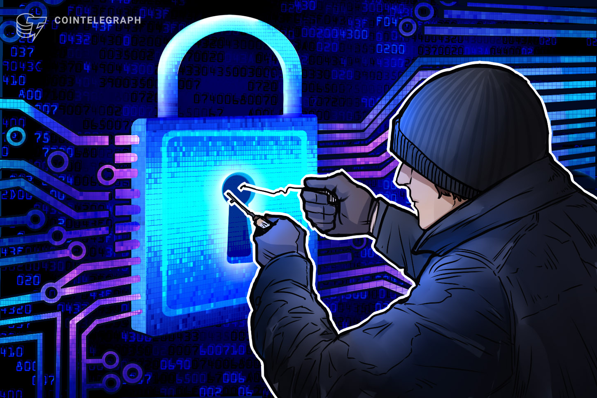
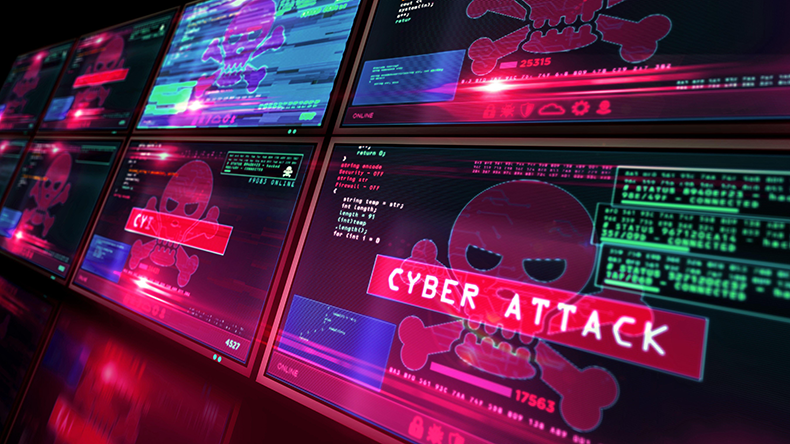
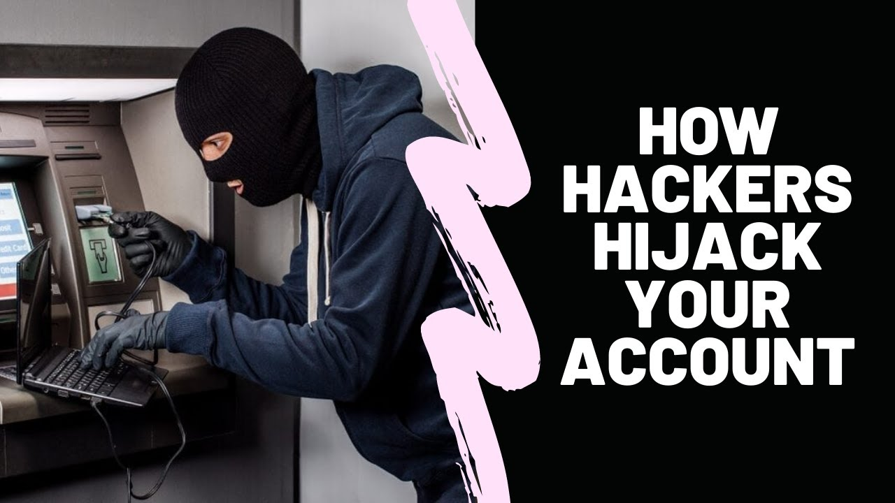
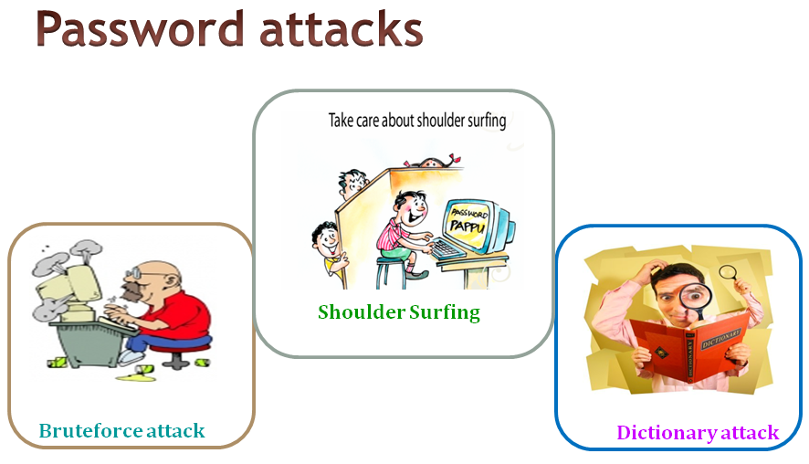
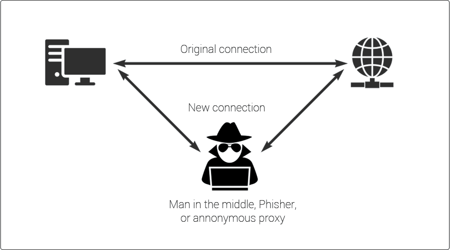
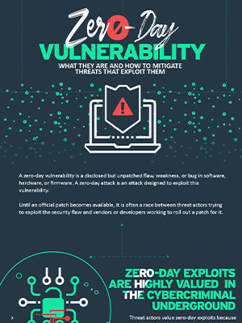
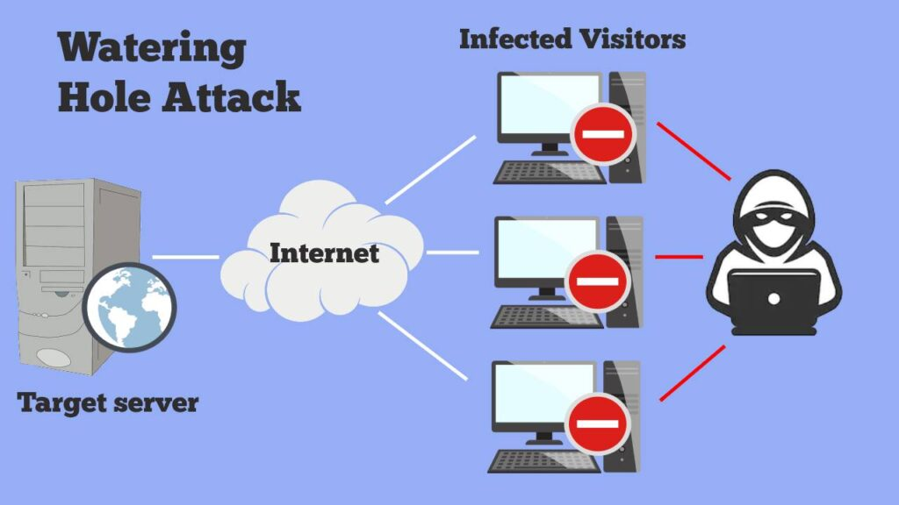

What is Cybersecurity?
Cybersec, Oct. 7, 2022

The term "cyber security" refers to the practice of utilizing procedures, tools, and
protocols to
prevent malicious intrusion into computerized infrastructures such servers, networks, computers, and
mobile devices. Protecting against cyber attacks and unauthorized use of systems, networks, and
technology is one of its primary goals.

What exactly is a Cyber Attack?
First, we'll describe what a cyber assault is and how it works before discussing the many forms of
cyber attacks. A cyber attack occurs when an outside entity gains access to a system or network
without permission. A hacker/attacker is someone who carries out a cyberattack.
Cyberattacks are harmful. Attacks can cause data breaches, resulting in data loss or manipulation.
Financial losses, customer distrust, and reputational damage result. We implement cybersecurity to
stop cyberattacks. Networks, computer systems, and their components are protected from illegal
digital access by cybersecurity.
Now that you understand what a cyber attack is, let's take a look at the many kinds of cyberattacks
that are out there.
Various Forms of Online Attacks
The world we live in today is subject to a wide variety of different types of cyber threats. It is
much simpler for us to defend our networks and systems against different kinds of assaults if we
have a solid understanding of those attacks. In this article, we will take a detailed look at the
top ten cyberattacks that, depending on their severity, can target either an individual or a huge
corporation.
Let's begin by discussing the various forms of cyberattacks that are included in our list:
Malware Attack
One of the most common cyberattacks. Malware includes worms, spyware, ransomware, adware, and
trojans.
Trojans pose as legitimate software. Ransomware locks down network components, while spyware
takes your private data without your knowledge. Banner ads are displayed by adware.
Trojans pose as legitimate software. Ransomware locks down network components, while spyware
takes your private data without your knowledge. Banner ads are displayed by adware.

Phishing attack
One of the most common cyberattacks is phishing. An attacker poses as a trusted contact and sends
the victim phishing emails.
Unaware, the victim opens the email and clicks the malicious link or opens the attachment.
Attackers gain account credentials and confidential data. Phishing can install malware.
Follow these actions to avoid phishing:
- Think before you click
- Check emails. Spelling and format issues are common in phishing emails.
- Use an anti-phishing toolbar.
- Change passwords often. The password must be contain aphanumeric character.

Hackers use Aircrack, Cain, Abel, John the Ripper, Hashcat, and others to crack your password.
Dictionary, brute force, and keylogger password assaults exist.
Preventing password attacks:
- Use alphanumeric characters and symbols
- Avoid sharing passwords.
- Update your passwords to prevent password attacks.
- Don't connect public wifi internet to login your credentials.

Man in the Middle Attack
Eavesdropping is a Man-in-the-Middle Attack (MITM). This attack hijacks a client-host session.
Hackers steal and modify data.
As shown below, the hacker controls client-server connection.
Steps to prevent MITM attacks:
- Don't connect public wifi network.
- Always upadate your software/application.
- Secure your website.

Hackers alter conventional SQL queries to launch SQL injection attacks on database-driven
websites. Injecting malicious code into a vulnerable website search box makes the server divulge
important information.Attackers can see, change, and remove database tables. This gives
attackers administrative rights.
SQL injection prevention
- Intrusion detection systems detect unwanted network access.
- Validata user Data.
- Validation controls user input

Denial-of-Service Attack
Companies risk Denial-of-Service Attacks. Attackers flood systems, servers, and networks with
traffic to drain resources and bandwidth.
- Analyze harmful traffic
- Recognize network slowdowns, website shutdowns, etc. In such cases, the company must act
immediately.
- Prepare an incident response plan, checklist, and data center for a DDoS assault.
- Outsource DDoS protection to cloud providers.
Insider Threat
Insider threats involve insiders, as the name implies. In such a case, it could be an employee
who knows everything about the company. Insider threats can cause massive damage.
Since small business employees have access to multiple data accounts, insider threats are
common. This type of attack can be motivated by greed, malice, or carelessness. Predicting
insider threats is difficult.
Organizations should have a strong security culture and limit staff access to IT resources based
on their job roles to prevent insider threat attacks. Organizations must train employees to
identify insider threats. Employees will be able to recognize when a hacker has tampered with
company data.
Cryptojacking
Cryptojacking involves cryptocurrency. Attackers use others' computers to mine cryptocurrency.
Infecting a website or tricking the victim into clicking a malicious link gives access. They also
use JavaScript ads online. Crypto mining code works in the background, so victims only notice a
delay in execution.
Steps to Prevent Cryptojacking
- Cryptojacking can infect even unprotected systems, so update your software and security
apps.
- Train employees to recognize cryptojacking threats.
- Adblockers block cryptojacking scripts.
- MinerBlock detects and blocks crypto mining scripts.

Zero-Day Exploits
It occurs after network vulnerabilities are announced and usually have no fix. Thus, the vendor
informs users of the vulnerability, which also alerts attackers.
The vendor or developer may fix the vulnerability in any timeframe. Attackers target the
disclosed vulnerability. They exploit the vulnerability before a patch is released.
Well-communicated patch management can prevent zero-day exploits. Management solutions automate
processes. It avoids deployment delays. Have a cyberattack incident response plan. Focus on
zero-day attacks. This reduces or eliminates damage.

Watering Hole Attack
A group, region, or organization is the victim. The attacker targets websites used by the
targeted group. Watching the group or guessing identify websites.
After that, attackers infect these websites with malware, infecting victims' systems. Such
malware steals personal data. Hackers can also remotely access infected computers.
Now let's prevent the watering hole attack
- Update your software to prevent attacks.
- Check security patches regularly.
- Network security tools can detect watering hole attacks.
- IPSs can detect such suspiciousactivity.
- Hide online activity to avoid watering hole attacks.
- Use a VPN and private browsing for this. VPNs secure Internet connections. It protects
browsing. VPNs include NordVPN.